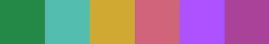
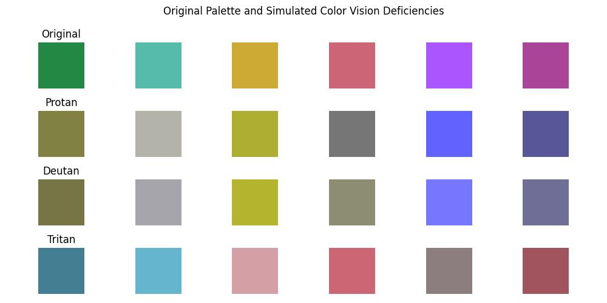

A problem I’ve been facing while working on my translation of The Qurʿān is that I wanted colorblind people to be able to read it and be able to differentiate between the colors I use. If you want more information on why my translation uses color then click here.
Finding the right colors has proven to be more difficult than I originally thought though. I would have thought that someone already made a good color palette showing the right colors to use but I was wrong. I had to make a new color system. I first made an algorithm to find colors that can work automatically. It worked great but when I tried using the colors on my text I found out that they were too bright for text.
While some of the colors Tol chose were still not great for text, they seem to make more sense for text than the colors by Wong. The ones from IBM weren’t enough for me. I removed 2 of the 8 colors chosen by Tol as I only needed 6 and wanted to focus on making those as different from each other as possible. So I worked on improving them and got these results:
Please don’t just try to pick the colors directly from the images as that is imprecise and may lead to the wrong colors. Instead use these hex values to get the colors:
- #228844
- #55BBAA
- #CCAA33
- #CC6677
- #AA55FF
- #AA4499
This might not look that impressive but let’s try to see how a colorblind person would see them:
If you have any extensions like “DarkReader” that change the colors of webpages then please turn them off to see everything correctly. The first row has the original colors. The second row is what a person with complete protan colorblindness would see. The third row is what a person with complete deutan colorblindness would see. The last row is what a person with complete tritan colorblindness would see. I used the Viennot algorithm for simulating protan and deutan and used the Brettel algorithm to simulate tritan. I chose those algorithms because Viennot is the standard for simulating protan and deutan and Brettel is the standard for simulating tritan. Other algorithms do exist but this seems to be a solid choice. I should add that a person with incomplete colorblindness will be able to differentiate these colors even better than someone with complete colorblindness.
Remember that a person would only see one of those 4 rows. As you can see, the colors in each row are very different from the other colors in the same row. Meaning a colorblind person would be able to differentiate between them.
I hope using such colors will become a standard for color coding every Musḥaf, be it for tajwīd or translation or anything else, In Shāʼ Allāh.
Here's the python code to display how colors would look to colorblind people:
import numpy as np
import matplotlib.pyplot as plt
from daltonlens import simulate
def generate_palette():
"""
Generate the original palette of colors.
"""
colors = ['#228844', '#55BBAA', '#CCAA33', '#CC6677', '#AA55FF', '#AA4499']
return np.array([np.array(list(int(color[i:i+2], 16) for i in (1, 3, 5))) for color in colors])
def simulate_color_deficiency(original_palette, deficiency_type):
"""
Simulate color vision deficiency for the original palette.
"""
if deficiency_type == 'Protan':
simulator = simulate.Simulator_Vienot1999()
deficiency = simulate.Deficiency.PROTAN
elif deficiency_type == 'Deutan':
simulator = simulate.Simulator_Vienot1999()
deficiency = simulate.Deficiency.DEUTAN
elif deficiency_type == 'Tritan':
simulator = simulate.Simulator_Brettel1997()
deficiency = simulate.Deficiency.TRITAN
else:
raise ValueError("Invalid deficiency type.")
deficient_palette = np.array([simulator.simulate_cvd(color.reshape(1, 1, 3), deficiency, severity=1).flatten() for color in original_palette])
return deficient_palette
def plot_palettes(original_palette, protan_palette, deutan_palette, tritan_palette):
"""
Plot the original palette and the simulated color vision deficiencies.
"""
num_colors = len(original_palette)
plt.figure(figsize=(10, 5))
# Plot original palette
for i, color in enumerate(original_palette):
plt.subplot(4, num_colors, i + 1)
plt.imshow([[color / 255]]) # Normalize color values to [0, 1] for display
plt.axis('off')
if i == 0:
plt.title('Original')
# Plot Protan palette
for i, color in enumerate(protan_palette):
plt.subplot(4, num_colors, num_colors + i + 1)
plt.imshow([[color / 255]]) # Normalize color values to [0, 1] for display
plt.axis('off')
if i == 0:
plt.title('Protan')
# Plot Deutan palette
for i, color in enumerate(deutan_palette):
plt.subplot(4, num_colors, 2*num_colors + i + 1)
plt.imshow([[color / 255]]) # Normalize color values to [0, 1] for display
plt.axis('off')
if i == 0:
plt.title('Deutan')
# Plot Tritan palette
for i, color in enumerate(tritan_palette):
plt.subplot(4, num_colors, 3*num_colors + i + 1)
plt.imshow([[color / 255]]) # Normalize color values to [0, 1] for display
plt.axis('off')
if i == 0:
plt.title('Tritan')
plt.suptitle('Original Palette and Simulated Color Vision Deficiencies', ha='center')
plt.tight_layout()
# Generate the original palette
original_palette = generate_palette()
# Simulate color vision deficiencies
protan_palette = simulate_color_deficiency(original_palette, 'Protan')
deutan_palette = simulate_color_deficiency(original_palette, 'Deutan')
tritan_palette = simulate_color_deficiency(original_palette, 'Tritan')
# Plot the original palette and simulated deficiencies
plot_palettes(original_palette, protan_palette, deutan_palette, tritan_palette)
plt.savefig('finalpic.jpg')
plt.show()